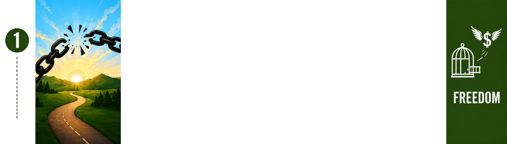
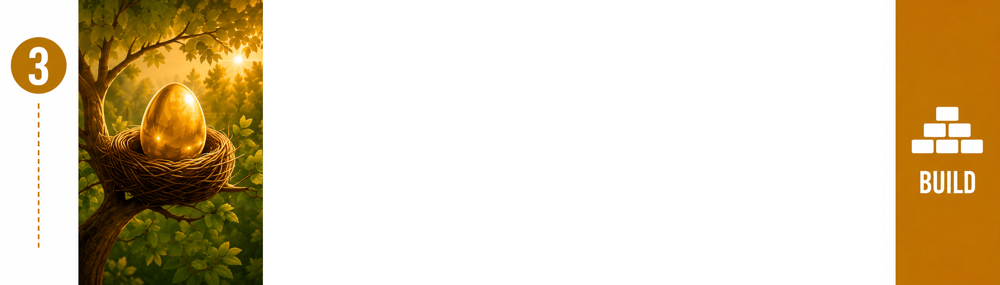
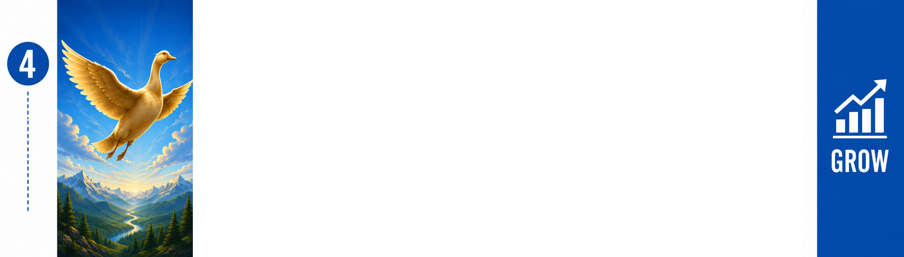
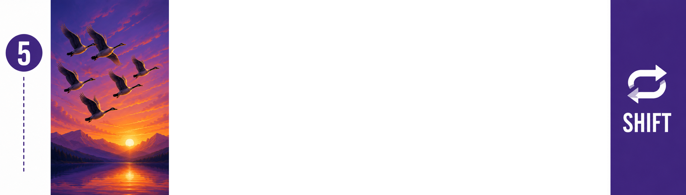
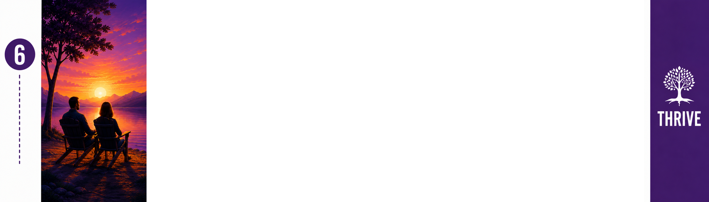

<!-- NEXT STEPS — SIX-STEP HOMEPAGE SECTION -->
<section class="six-step-home">
  <div class="container">
    <div class="center six-step-heading">
      <div class="eyebrow">THE SIX-STEP WEALTH-BUILDING JOURNEY</div>
      <h2>Six Steps. One Journey.</h2>
      <p class="lead">Explore the six steps through story, purpose, and visual language.</p>
    </div>

    <div class="six-step-list">

      <article class="six-step-row step-freedom">
        <div class="six-step-image"></div>
        <div class="six-step-copy">
          <div class="six-step-number">STEP 1 · FREEDOM</div>
          <h3>BREAK FREE</h3>
          <h4>Build your financial foundation.</h4>
          <p>Eliminate debt, create positive cash flow, and get your financial house in order so you can start building wealth.</p>
          <a class="six-step-link" href="journey.html">Explore Step 1 →</a>
        </div>
        <div class="six-step-icon"></div>
      </article>

      <article class="six-step-row step-secure">
        <div class="six-step-image"></div>
        <div class="six-step-copy">
          <div class="six-step-number">STEP 2 · SECURE</div>
          <h3>SECURE YOUR FUTURE</h3>
          <h4>Build a safety net retirement that lets you take bold steps toward growing your future wealth in the next step.</h4>
          <p>Calculate what you’re likely to need in retirement, determine how much you need to contribute, and evaluate whether additional retirement contributions remain the best use of your next dollar as you pursue your broader wealth-building goals.</p>
          <a class="six-step-link" href="journey.html">Explore Step 2 →</a>
        </div>
        <div class="six-step-icon"></div>
      </article>

      <article class="six-step-row step-build">
        <div class="six-step-image"></div>
        <div class="six-step-copy">
          <div class="six-step-number">STEP 3 · BUILD</div>
          <h3>DON’T BUILD A NEST EGG. BUILD A GOLDEN GOOSE.</h3>
          <h4>Build a substantial pool of productive capital.</h4>
          <p>Once your foundation and retirement are on track, consider directing available next dollars toward building an investment portfolio designed to harness the power of compounding.</p>
          <a class="six-step-link" href="journey.html">Explore Step 3 →</a>
        </div>
        <div class="six-step-icon"></div>
      </article>

      <article class="six-step-row step-grow">
        <div class="six-step-image"></div>
        <div class="six-step-copy">
          <div class="six-step-number">STEP 4 · GROW</div>
          <h3>GIVE YOUR GOOSE WINGS</h3>
          <h4>Optimize your Golden Goose for long-term growth.</h4>
          <p>Learn how to evaluate investments, historical performance, risk, fees, diversification, taxes, and compounding so you can make informed decisions about the factors that can influence how your wealth grows.</p>
          <a class="six-step-link" href="journey.html">Explore Step 4 →</a>
        </div>
        <div class="six-step-icon"></div>
      </article>

      <article class="six-step-row step-shift">
        <div class="six-step-image"></div>
        <div class="six-step-copy">
          <div class="six-step-number">STEP 5 · SHIFT</div>
          <h3>TEACH YOUR GOOSE TO SOAR</h3>
          <h4>Learn when to shift your strategy and let compounding do more of the work.</h4>
          <p>Once your Golden Goose is on track to produce the Golden Eggs you’ll need by the time you’re ready to use them, learn how and when to consider shifting your strategy and let compounding do more of the work.</p>
          <a class="six-step-link" href="journey.html">Explore Step 5 →</a>
        </div>
        <div class="six-step-icon"></div>
      </article>

      <article class="six-step-row step-thrive">
        <div class="six-step-image"></div>
        <div class="six-step-copy">
          <div class="six-step-number">STEP 6 · THRIVE</div>
          <h3>LIVE YOUR BEST LIFE</h3>
          <h4>Enjoy your wealth and build a lasting legacy.</h4>
          <p>Use the income from your Golden Goose alongside your earned income to live the life you want today, while continuing to strengthen your retirement strategy and build a legacy for generations to come.</p>
          <a class="six-step-link" href="journey.html">Explore Step 6 →</a>
        </div>
        <div class="six-step-icon"></div>
      </article>

    </div>

    <div class="center six-step-cta">
      <a class="button" href="journey.html">Explore the Full Journey</a>
    </div>
  </div>
</section>
